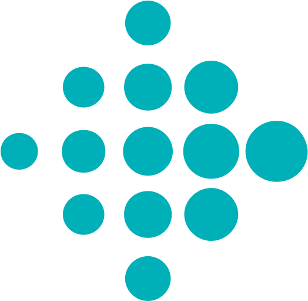

Resume
My Journey, So Far.
Studying healthcare at Brown and a desire to explore different industries and skills led me to begin my career in strategy consulting. Later, working corporate strategy for Fitbit, I was exposed to the fascinating world of tech and programming. This revelation inspired my career shift to software engineering, to not just recommend the solutions that should be created, but to build them.
Experience
Software Engineering Student
Jul 2020 - Present
Rithm School
- A four-month accelerated learning experience, Rithm introduced me to fullstack web development
- With a cohort of eight students and two instructors, I focused primarily on JavaScript and Python, learning a variety of frameworks and libraries
- The technical skills taught, complimented by a final project spent working within an external organization's codebase, built foundational knowledge of both the front and back end
Business Planning and Strategy
Aug 2018 - Jul 2020
Fitbit
- Prior to my time with Rithm, I was a manager on the business operations and strategy team within Fitbit's B2B branch, Fitbit Health Solutions
- I focused on developing my team's long term strategy, creating go-to-market strategies, and improving how our different business lines operate
- I improved my understanding of the drivers and barriers that allow some tech companies to succeed where others fail
Consultant
Sep 2015 - Jul 2018
Accenture
- Within Accenture's strategy consulting group, I focused primarily on healthcare and consumer packaged goods
- My projects were focused on growth strategy for multi-billion dollar companies
- While working alongside both colleagues and clients, I learned how businesses operate from the front lines to the c-suite, how to use analytical tools like SPSS and R to answer complex questions, and how to distill findings into understandable solutions
Bachelor Degree
Sep 2011 - Jun 2015

Brown University
- I studied Health and Human Biology with a focus on healthcare
- Throughout my four years, I was a member of the Men's Varsity Lacrosse team, receiving Academic All-American honors my senior year
- Off the field and out of the classroom I was a part of the Brown Biotech Investment Group as well as the Delta Phi Fraternity